MANUAL FAZA 2
Sursa unica de adevar pentru tot ce mai e de construit la casuta din copac.
Versiunea 1.2 · 11 august 2026 · acopera: inchiderea podelei, balustrada, scara, casa.
Faza 1 (structura: stalpi, glulam, joiste) e construita — istoricul ei ramane in dosarul de proiect si in manualul Fazei 1.
REGULA DE PRECEDENTA: daca documentul asta contrazice orice alta fisa, plan sau desen din proiect pentru Faza 2, castiga documentul asta. Fisele absorbite au fost mutate in _archive/. Nu construi dupa ele.
1 · Unde suntem
2 · Deciziile inchise
3 · Cotele canonice
4 · Ordinea si portile
5 · F1 — Inchide podeaua
6 · F2 — Balustrada
7 · F3 — Scara
8 · F4 — Casa
9 · Cumparaturi
10 · Siguranta copii
11 · Deschise
12 · Istoricul corectiilor
1 · Unde suntem
| Facut si verificat | Ramas de facut |
|---|
|
4 stalpi pe papuc + fundatie · glulamuri montate · nodurile din spate cu talpic + 3× Heco 8×200 + 2× M12 + contrafisa 45° (P0 inchis) · 6 joiste taiate si montate pe 0 · 280 · 720 · 1120 · 1550 · 2100 · blocaje intre joiste · coltare C2 de dedesubt · ambele ancore M12 pentru stalpii casei, montate inainte de dusumea
|
restul dusumelei (partiala azi) · rama copacului · curatarea lastarilor · numaratoarea receptiei · balustrada · scara · casa
|
| Buget ramas | Zile de lucru | Lant inaltimi | Amprenta punte |
|---|
| ~3.000 lei | ~6–7 (3–4 weekenduri) | 1900 · 2100 · 2200 · 2228 | 2100 × 2440 |
2 · Deciziile inchise
Toate sunt finale. Nu se redeschid decat daca le redeschizi tu explicit.
| Decizie | Alegerea | Motiv / consecinta |
|---|
| Balustrada — inaltime | 1000 general
1100 pe consola | 1100 exact unde a cerut structuristul (nasul consolei). Restul la 1000. |
| Balustrada — stalpisori | 8 buc · 16× M10 | balustrada se face INAINTEA casei → ambele laturi au nevoie de stalpisor propriu la capatul dinspre casa. |
| Invelitoare casa | Onduline | usor, se taie fara muchii taioase, linistit la ploaie, ~140 lei tot acoperisul. |
| Usa casa | gol deschis | −85 lei, zero degete prinse, ventilatie. Prag mic. |
| Scara — geometrie | AMANATA (11.08)
baza 1900 · 11×202,5 · 10×190 | AMANATA 11.08 — Vlad reia o varianta simpla si usoara, later. Geometria de aici ramane referinta pentru varianta viitoare; materialele NU se cumpara acum. Restul: varianta abrupta, aleasa informat, compensarile devin obligatorii. |
| Scara — trepte | pe tacheti | coardele NU se pot cresta (calcul in §7). |
| Dublarea joistelor (sisters) | SKIP definitiv | casa = ~770 kg worst case → ~1,9 kN/stalp; joista simpla 100×200 lucreaza la ~1,3 vs ~14 MPa admisibil (margine >10×). Rezerva necuantificata: parghia pe proeminenta glulamului la nodul din spate. Recomandarea de dublare / review extern — declinata informat. |
| Ordinea fazei | F1 → F2 → F3 → F4 | balustrada imediat dupa podea: margine libera la 2,2 m si X-urile laterale sunt o scara gata facuta pentru copii. |
3 · Cotele canonice
| Marime | Cota | Nota |
|---|
| Varf stalpi fata / top polita+talpic | 1900 | as-built |
| Top glulam | 2100 | |
| Top joiste | 2200 | joiste 100×200 |
| Fata dusumelei | 2228 | dusumea larice 28 mm |
| Latime punte (axe joiste capat) | 2100 | |
| Adancime punte (nas → spate) | 2440 | verifica pe teren |
| Axele joistelor de la S4 | 0 · 280 · 720 · 1120 · 1550 · 2100 | totul se prinde pe ele |
| Consola (nasul din fata) | 700 nominal | pozele sugereaza mai putin — de masurat |
| Adancime terasa libera | 1340 | = 2440 − 1100 casa |
| Amprenta casa | 2100 × 1100 | pe spate, lipita de stalpii de 4 m |
| Perete casa spate / fata | 1700 (+250 dulap) / 1642 | masurat 11.08; stalpii fata sunt deja montati la 1600, 90×90 — vezi §8 |
| Reazem spate (perete + dulap pe muchie) | 1950 | 1700 + dulap 46×250 |
| Panta acoperis | 308 / 1100 = 15,6° | o apa, spre terasa |
| Balustrada | 1000 / 1100 consola | goluri sub 90 |
| Scara — panta reala | 46,8° | atan(202,5/190). Nu 49,5° — vezi §12 |
4 · Ordinea si portile
| Faza | Durata | Poarta de iesire — nu treci mai departe fara |
|---|
| F1 Inchide podeaua | ~1 zi | dusumea completa · rama copac · tije M12 protejate · contrafise verificate la AMBELE noduri |
| F2 Balustrada | ~1–1,5 zile | zero joc la zgaltait · martorul de 90 nu trece nicaieri · poarta se inchide singura |
| F3 Scara AMANATA 11.08 | ~1 zi | zero balans cu adult · banda pe toate 10 · 2 maini curente continue. Amanata — se reia o varianta simpla; pana atunci puntea nu are acces la sol. |
| F4 Casa | ~3–4 zile | F1–F3 bifate · cele 5 masuratori M1–M5 facute · pozitia trunchiului confirmata |
Poarta de sezon: nu lasa scheletul casei acoperit-neimbracat peste sezonul de ploi. Lambriul se pune in aceeasi etapa cu acoperisul.
Poarta veche „dublarea joistelor inainte de stalpii casei" NU mai exista — inchisa prin decizie (§2).
5 · F1 — Inchide podeaua ~1 zi
Pasii
- Curata lastarii din zona podelei (copacul a dat ~1,5 m de lastari fix acolo). Trunchiul principal nu se atinge.
- Rama copac: 2 traverse ~300 din offcut 100×100, intre joistele de la 280 si 720, Heco 6×80 oblic (~6 sur.). Gol 3–5 cm de jur imprejurul trunchiului — nimic nu atinge copacul.
- Restul dusumelei: scanduri la 2100 · rost 5 mm (un cui ca distantier) · decupaje la cei 2 stalpi din spate (PST 700E) si la copac · inox 5×60, NUMAI cu GSR pe ambreiaj 8–12, bit T25 — niciodata cu impactul (capul inox se rupe in larice) · 2 suruburi/scandura pe fiecare din cele 6 linii de joista · pregaurire 4–5 mm doar la capete · ulei DUPA montaj.
- Protejeaza tijele M12 care ies din dusumea: capac sau banda groasa pe fiecare. Stau asa pana la casa, pe puntea pe care merg copiii.
- Verificari: contrafisa 45° prezenta si stransa la AMBELE noduri din spate · toate capetele de surub la ras · cozile contrafiselor si proptelelor taiate la ras la sol.
- Masoara si scrie aici: nasul real al consolei ______ · adancimea reala a puntii ______ · de la spatele podelei pana la centrul trunchiului ______ (vezi §11).
- Numara receptia (n-a fost verificata niciodata): C2 ramase · inox 5×60 · Heco 6×80 · Heco 6×100 · cheie tubulara 17/19.
GATA CAND: ☐ dusumea completa, uleiata, zero varfuri iesite · ☐ rama copac montata, gol 3–5 cm · ☐ tije protejate · ☐ contrafise verificate ambele · ☐ cele 3 masuratori + numaratoarea scrise mai sus.
6 · F2 — Balustrada ~1–1,5 zile
Trei reguli: (1) stalpisorii se prind de lemnul structurii cu bulon M10 strapuns — suruburi in dusumea = balustrada care cedeaza exact cand se sprijina un copil; (2) fiecare stalpisor cade pe axa unei joiste, altfel bulonul intra in gol; (3) golul luminii sub 90 mm, verificat cu un martor de 90 taiat din offcut, in fiecare gol.
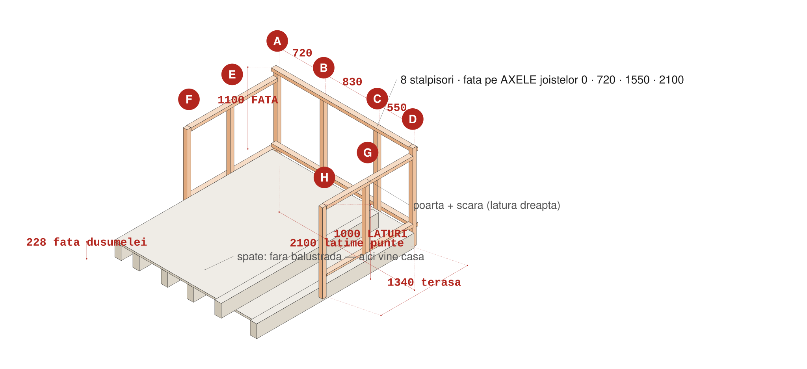
8 stalpisori (A–H) · fata la 1100 pe axele 0 · 720 · 1550 · 2100 (travei 720 / 830 / 550) · laturi la 1000, pe 670 si 1340 de la nas
Cut list
| Piesa | Sectiune | Lungime | Buc |
|---|
| Stalpisor FATA (h 1100) | 58×58 sau 60×60 | 1330 | 4 |
| Stalpisor LATURA (h 1000) | 58×58 sau 60×60 | 1230 | 4 |
| Mana curenta fata / laturi | 45×70 | 2160 / 1360 | 1 / 2 |
| Lisa jos fata / laturi | 45×70 | 2160 / 1360 | 1 / 2 |
| Lamele | 18×28 | ~1000 fata / ~900 laturi | ~42 |
| Rama poarta | 45×70 | 2×900 + 2×560 | 4 |
De ce lungimile astea: stalpisor = 1000 (sau 1100) + 28 dusumea + 200 suprapunere pe joista + ~100 rezerva de taiere. Rezerva sta SUS si se reteaza la final, dupa ce mana curenta e la nivel.
PASUL 1 — Gaureste stalpisorii (jos, pe capra)
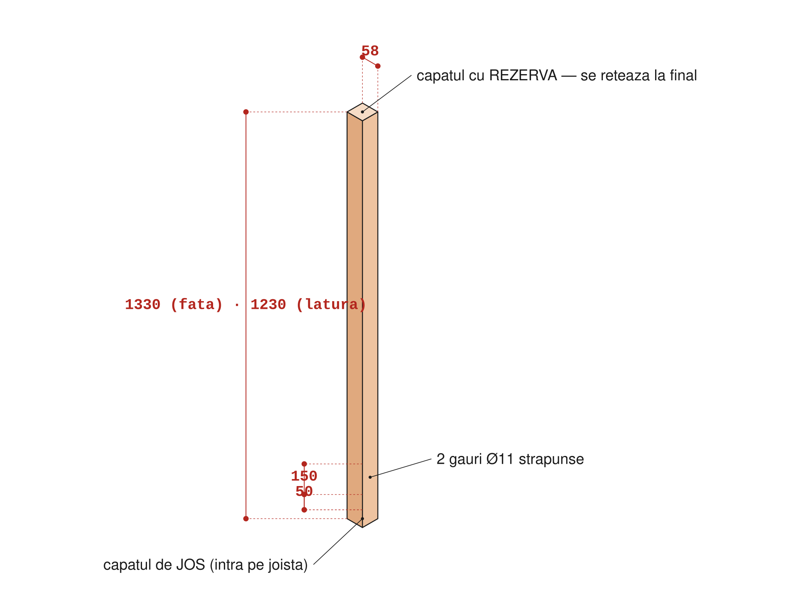
- De la capatul de JOS, marcheaza gaurile la 50 si 150 mm — cad la 1/4 si 3/4 din inaltimea joistei.
- Gaureste Ø11 strapuns, GSR pe simbol burghiu, viteza 1, ambele maini. Lemn de sacrificiu la iesire.
- Marcheaza pe fiecare: SUS · FATA (1330) sau LATURA (1230). Teseste muchiile — mainile copiilor trec pe ele.
GATA CAND: ☐ 8 stalpisori × 2 gauri Ø11 · ☐ marcati · ☐ muchii tesite.
PASUL 2 — Monteaza stalpisorii
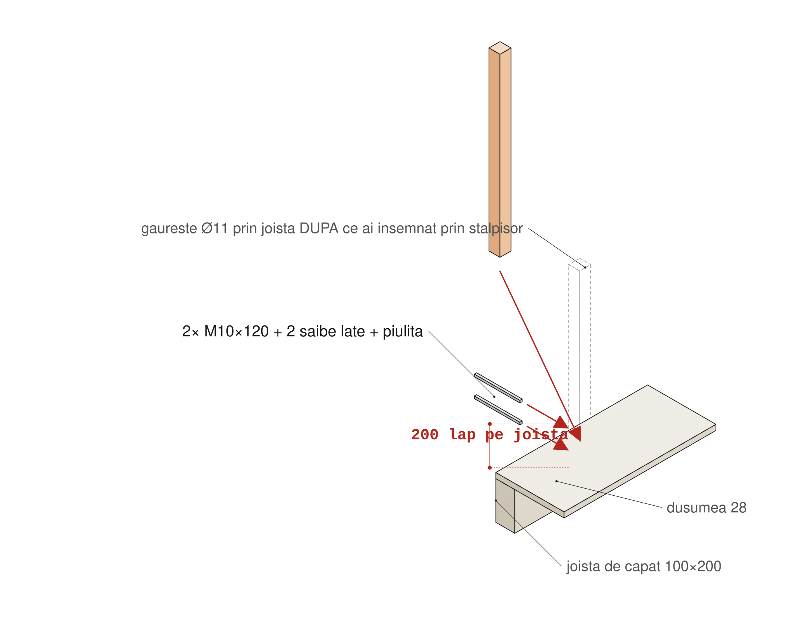
- Ordinea: intai cei 4 de colt/capat, apoi cei de mijloc — intre capete intinzi o sfoara si aliniezi restul.
- FATA (4): pe fata laterala a joistei de pe axa respectiva, retras ~40 mm de capatul joistei. LATURI (4): pe fata exterioara a joistei de capat.
- Pozitionezi, verifici vertical cu nivela pe doua fete, insemnezi prin gaurile existente, dai jos, gauresti Ø11 prin joista, montezi: 2× M10×120 + saiba lata pe ambele fete + piulita.
- Capetele de tija taiate la ras si pilite. Apoi zgaltaie fiecare stalpisor cu putere — orice joc se corecteaza acum.
GATA CAND: ☐ 8 stalpisori × 2 M10 · ☐ toti verticali · ☐ zero joc · ☐ capete pilite.
PASUL 3 — Retezare + mana curenta + lisa
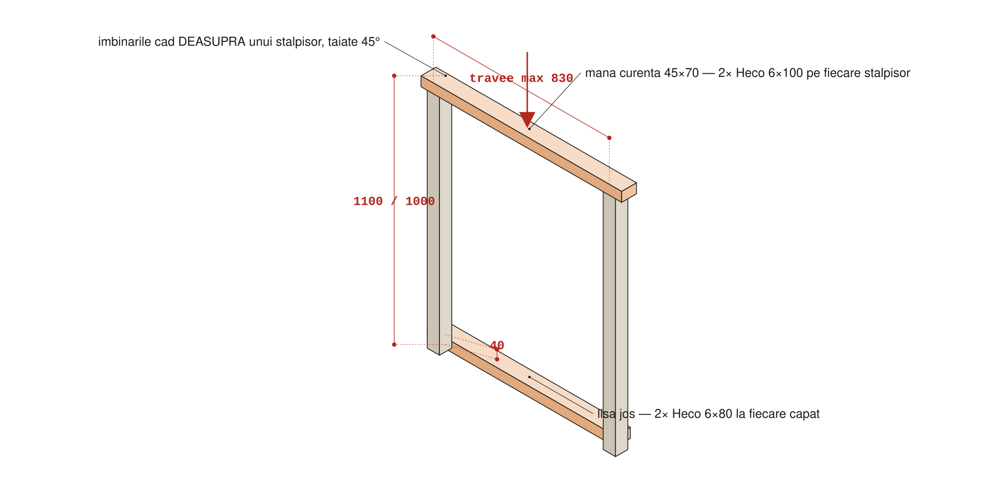
- Retezi acum, nu inainte: de la fata dusumelei, 1100 pe cei 4 din fata si 1000 pe cei 4 laterali. Marcheaza cu furtun de nivel sau nivela lunga — o singura linie pentru toti, nu 8 cote independente.
- Mana curenta 45×70 peste capete, fata lata orizontala: 2× Heco 6×100 pe fiecare stalpisor, oblic din lateral. Imbinarile cad deasupra unui stalpisor, taiate la 45°.
- Lisa jos 45×70, fata de jos la 40 mm deasupra dusumelei: 2× Heco 6×80 oblic la fiecare capat.
- Tranzitia 1100 → 1000 la coltul consolei: taietura oblica pe ~150 mm sau treapta neteda. Nicio muchie ascutita.
Zona de colt = zona de catarat. Dupa montaj verifica: nu exista nicio suprafata orizontala intre lisa si mana curenta pe care sa se puna un picior.
GATA CAND: ☐ toate capetele pe aceeasi linie · ☐ mana curenta continua · ☐ lisa la 40 · ☐ zero praguri intermediare.
PASUL 4 — Lamelele
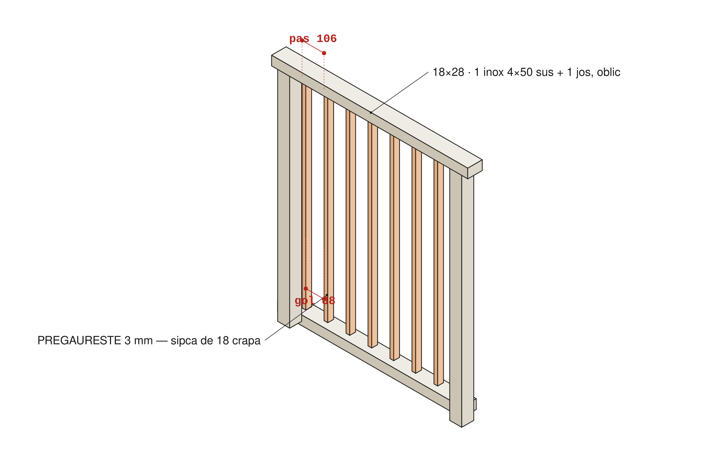
- Masoara pe loc inaltimea libera in fiecare travee, taie lamelele la cota minus 2 mm.
- Pas 106 mm (18 lamela + 88 gol), pornind de la fiecare stalpisor spre mijloc. Ultimul gol iese mai mic — bine asa, niciodata mai mare.
- 1× inox 4×50 sus + 1 jos, oblic din spate, cu pregaurire 3 mm — sipca de 18 crapa altfel. Bit T20, ambreiaj mic.
- Testul de 90: plimba martorul prin FIECARE gol, inclusiv cele de langa stalpisori si la tranzitia 1100/1000.
GATA CAND: ☐ toate lamelele, 2 suruburi fiecare · ☐ martorul de 90 nu trece nicaieri · ☐ zero varfuri spre punte.
PASUL 5 — Poarta de la scara
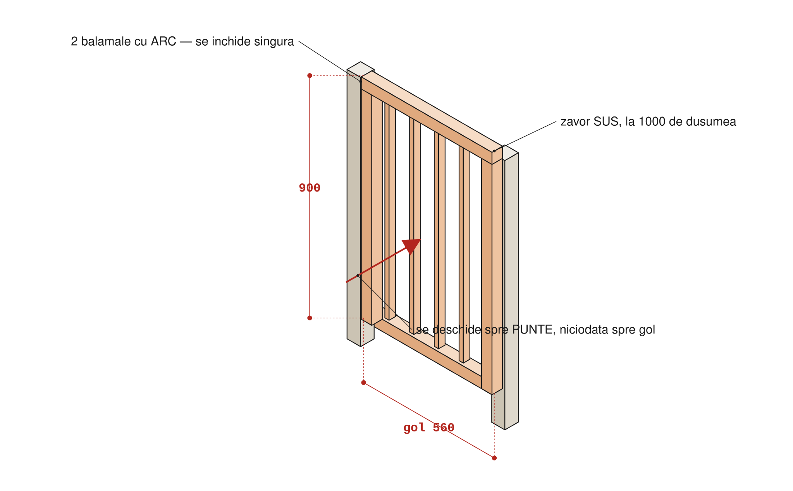
- Gol 560 mm in latura pe care urca scara, langa stalpisorul de la 670. Confirma latimea dupa ce stii unde ajunge scara (F3).
- Rama: 2 montanti 45×70 × 900 + 2 traverse 45×70 × 560, colturi cu 2× Heco 6×100 + vinclu 40×40 pe interior. Aceleasi lamele, acelasi pas.
- 2 balamale cu arc la 100 mm de sus si de jos. Se deschide spre PUNTE, niciodata spre gol.
- Zavor sus, la ~1000 de dusumea, pe partea dinspre punte.
- Da-i drumul de 10 ori din pozitii diferite — trebuie sa se inchida si sa se zavorasca singura de fiecare data.
GATA CAND: ☐ se inchide singura din orice pozitie · ☐ zavorul prinde mereu · ☐ se deschide spre punte · ☐ trece testul de 90.
Feronerie balustrada
| Articol | Cant | Unde |
|---|
| Bulon M10×120 + 2 saibe late + piulita | 16 | 8 stalpisori × 2 — ai 12, cumperi 4 |
| Heco 6×100 (T30) | ~24 | mana curenta + colturi poarta |
| Heco 6×80 (T30) | ~32 | lisa jos |
| Inox 4×50 (T20) | ~90 | lamele: 2 × ~42 |
| Balama cu arc · zavor · vinclu 40×40 | 2 · 1 · 4 | poarta |
7 · F3 — Scara ~1 zi
Ai ales varianta abrupta. Compensarile sunt parte din decizie, nu optiuni: trepte late 600 cu nas · banda antiderapanta pe fiecare treapta · mana curenta pe AMBELE parti · dale la baza · poarta cu arc sus. Plus o regula de folosire, spusa si aratata copiilor: la panta asta se coboara cu fata la scara, ca pe o scara de mansarda.
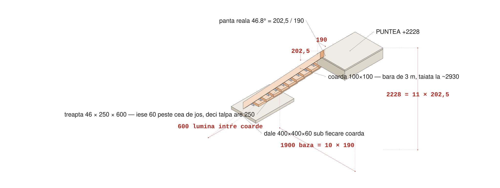
Doua coarde la 600 lumina · 10 trepte pe tacheti · baza pe dale · varful bulonat in joista de capat
Geometria
| Marime | Valoare | De unde |
|---|
| Inaltime totala | 2228 | masoara pe teren, apoi imparte la 11 |
| Baza | 1900 | 10 × 190 |
| Urcare | 202,5 | 2228 / 11 · toate egale, ±5 mm max |
| Calcatura | 190 | 1900 / 10 |
| Panta | 46,8° | atan(202,5 / 190) — vezi §12 |
| Pas pe coarda | 278 | √(202,5² + 190²) — cifra cu care trasezi |
| Lungime coarda | taie la ~2930 | axa 2777 + taieturile de capat · intra intr-o bara de 3 m |
| Lumina intre coarde | 600 | = lungimea treptei |
| Adancime treapta | 250 | iese 60 peste cea de jos → talpa se aseaza pe 250 |
De ce treapta de 250 conteaza: cu calcatura de 190 dar treapta de 250, piciorul are 250 mm de sprijin. Senzatia la urcare devine echivalenta cu ~39° — practic o scara normala de interior, pe aceeasi geometrie si aceeasi bara de 3 m.
Cut list SECTIUNI LEROY COLOSSEUM
| Piesa | Sectiune | Lungime | Buc |
|---|
| Coarda | 100×100 | ~2930 | 2 |
| Treapta | 46×250 | 600 | 10 |
| Tachet | 46×46 | 80 | 20 |
| Montant mana curenta | 46×46 | 1200 | 6 |
| Mana curenta | 46×46 | ~2950 | 2 |
| Opritor la baza | 46×46 | 200 | 2 |
Coardele NU se pot cresta. O crestatura de 202,5 × 190 mananca 138,5 mm perpendicular din coarda — dintr-una de 100 (sau chiar 140) nu mai ramane nimic. De aceea treptele stau pe tacheti, iar coarda ramane intreaga pe toata lungimea.
Lungimea tachetului depinde de coarda: pe 100 → tachet 80; pe 140 → tachet 100. Regula: pe lungimea tachetului muchia coardei coboara cu lungime × 1,066, si asta trebuie sa incapa in latimea coardei.
PASUL 1 — Masoara si pregateste baza
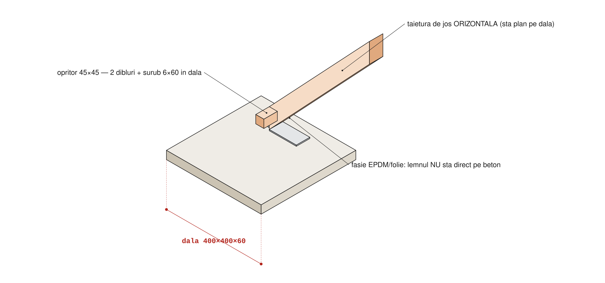
- Masoara inaltimea reala pana la fata dusumelei, exact unde urca scara. Imparte la 11. Scrie aici: ______
- Marcheaza pe sol punctul la 1900 orizontal de la fata joistei de capat.
- Sapa ~10 cm, balast compactat, aseaza cele 2 dale la nivel (nivela lunga pe amandoua).
GATA CAND: ☐ inaltime masurata si impartita la 11 · ☐ dale asezate, stabile, la nivel.
PASUL 2 — Traseaza si taie coardele
- Metoda echerului „mergator": pui echerul pe coarda cu 190 si 202,5 pe muchia de sus, trasezi coltul, muti echerul exact in varful precedent si repeti — de 10 ori. Asa erorile nu se aduna, cum s-ar intampla masurand de fiecare data de la capat.
- Fiecare colt = coltul din spate al unei trepte. Linia tachetului = linia orizontala coborata cu 46 (grosimea treptei).
- Taieturile de capat: jos orizontala (sta plan pe dala), sus verticala (se lipeste de joista).
- A doua coarda NU se traseaza separat: o pui pe prima, cleme, si copiezi liniile.
- Verificare inainte de taiere: de la capatul de jos la ultimul colt trebuie sa iasa ~2780 (10 × 278). Peste 15 mm diferenta → retrasezi, nu compensezi la ultima treapta.
GATA CAND: ☐ 10 pozitii trasate · ☐ linia tachetilor trasata · ☐ a doua coarda copiata · ☐ verificarea de 2780 trecuta.
PASUL 3 — Tachetii, jos pe capre
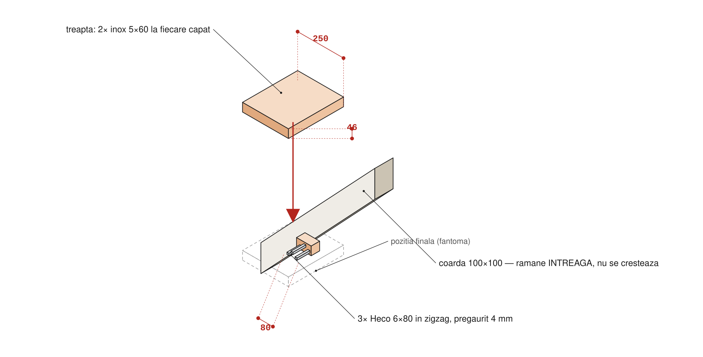
- Taie cei 20 de tacheti la 80.
- Fiecare pe fata INTERIOARA a coardei, cu fata de sus exact pe linia trasata: 3× Heco 6×80 in zigzag (la ~20 / 50 / 80 pe lungime), pregaurite 4 mm. Nu pe aceeasi linie de fibra — despica lemnul.
- Cand ai terminat o coarda, aseaz-o peste cealalta: tachetii trebuie sa coincida. Corectezi acum, nu dupa ridicare.
GATA CAND: ☐ 20 tacheti × 3 suruburi · ☐ coardele suprapuse coincid · ☐ toate taieturile de capat facute.
PASUL 4 — Ridica si prinde
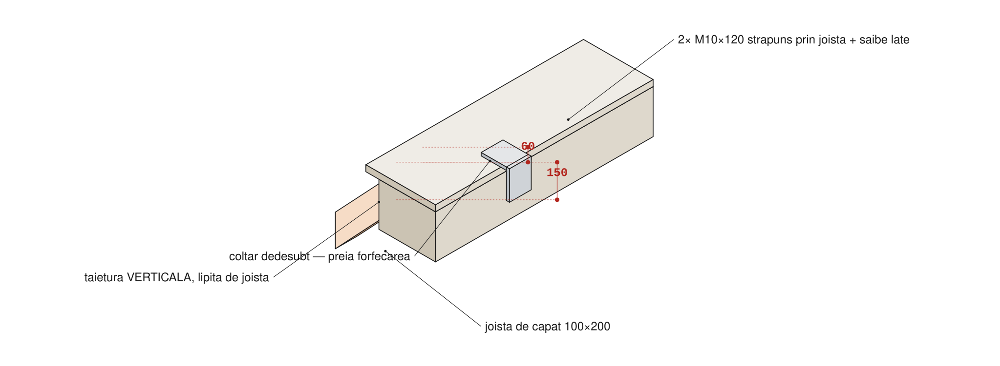
- Doi oameni. Unul tine sus, unul pozitioneaza baza pe dale.
- Verifica: coardele paralele (600 masurat sus SI jos) · scara in plan vertical · tachetii orizontali la nivela.
- Sus: gaura Ø11 prin coarda si joista → 2× M10×120 (la ~60 si ~150 de la fata dusumelei) + saibe late + piulite. Plus 1 coltar sub fiecare coarda, 4× Heco 6×80 — el preia forfecarea, buloanele tin scara lipita.
- Jos: opritor 45×45 × 200 in fata fiecarei coarde, 2 dibluri + suruburi 6×60 in dala. Fasie de folie/EPDM intre lemn si beton.
Nimeni nu urca pana nu sunt puse ambele buloane pe fiecare coarda SI opritoarele de jos. O scara sprijinita provizoriu e exact configuratia in care aluneca.
GATA CAND: ☐ 4 buloane · ☐ 2 coltare · ☐ 2 opritoare in dala · ☐ 600 sus si jos · ☐ tacheti la nivela.
PASUL 5 — Trepte si maini curente
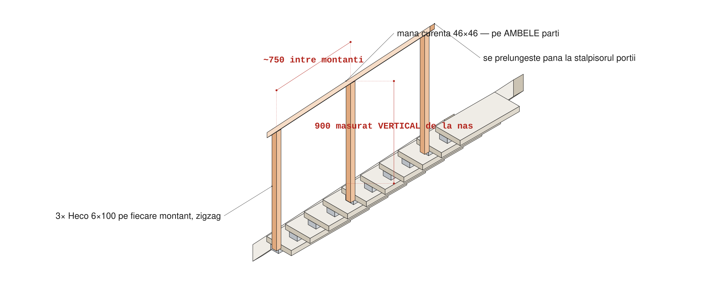
- Taie cele 10 trepte la 600 (sau cota reala intre fetele interioare). Teseste toate muchiile, mai ales nasul. Lemnul Leroy e nerindeluit — slefuieste nasul si mainile curente.
- Aseaza fiecare treapta pe tacheti, cu nasul iesit 60 mm. Nivela pe fiecare, pe ambele directii.
- 2× inox 5×60 la fiecare capat (4/treapta), verticale in tachet, pregaurire 4 mm, cap ingropat la ras. Numai GSR pe ambreiaj 8–12.
- Banda antiderapanta pe fiecare treapta, la 25–30 mm in spatele nasului, pe toata latimea. Lemn curat si USCAT la lipire.
- 6 montanti 46×46 × 1200, cate 3 pe parte, pe fata exterioara a coardei: 3× Heco 6×100 fiecare, zigzag. Retezi la 900 masurat vertical de la nasul treptei.
- Mana curenta deasupra, paralela cu panta, 2× Heco 6×100 pe montant, capete rotunjite. Se prelungeste pana la stalpisorul portii — mana trebuie sa aiba de ce se tine exact cand pasesti pe punte.
GATA CAND: ☐ 10 trepte × 4 suruburi, toate la nivela · ☐ banda pe toate 10 · ☐ 2 maini curente continue · ☐ zero balans la urcare cu adult.
Feronerie scara
| Articol | Cant | Unde |
|---|
| Bulon M10×120 + saibe + piulita | 4 | 2 pe fiecare coarda, sus |
| Coltar | 2 | sub capatul de sus al fiecarei coarde |
| Heco 6×80 (T30) | ~68 | 60 tacheti + 8 coltare |
| Heco 6×100 (T30) | ~30 | 18 montanti + 12 mana curenta |
| Inox 5×60 (T25, GSR) | 40 | trepte |
| Diblu + surub 6×60 · banda antiderapanta | 4 · ~6 m | opritoare · 10 fasii × 600 |
8 · F4 — Casa ~3–4 zile
Patru reguli: (1) nu cumperi si nu tai nimic inainte de cele 5 masuratori; (2) proptelele de pe stalpii de 4 m nu se ating pana cutia nu e sus si bulonata — baza lor e articulata, cutia ii tine; (3) ridicarea se face in zi fara vant, minim 3 oameni, fiecare panou proptit inainte sa-i dai drumul; (4) lambriul si acoperisul se pun in aceeasi etapa.
Pasul 0 — Cele 5 masuratori care croiesc casa
| # | Ce masori | Nominal | Real |
|---|
| M1 | Cat ies stalpii de 4 m deasupra dusumelei (ambii; ia valoarea mai MICA) — el da inaltimea peretelui din spate | 1700 (masurat) | 1700 |
| M2 | De la fata stalpilor spate pana la axa tijelor M12 = adancimea casei | 1100 | ______ |
| M3 | Lumina intre stalpii de 4 m, masurata jos SI sus | 2000 | ______ |
| M4 | Distanta intre axele celor 2 tije M12 (= M3 + 100) | 2100 | ______ |
| M5 | Cat ies tijele M12 deasupra dusumelei | ~100 | ______ |
STOP si intreaba inainte de debitare daca: M3 jos difera de M3 sus cu peste 15 mm (stalpii nu-s paraleli) · tijele M12 nu cad pe axa joistelor de capat · dulapul de reazem are sub 250 inaltime (panta scade sub 13° si marja la Onduline se pierde) · trunchiul copacului cade in ultimii 1100 mm ai puntii (atunci peretele trebuie croit in jurul lui — vezi §11).
Cut list — formule, nu numere fixe
A = adancime 1100 · L = lumina intre stalpi 2000. Formule: montanti spate = M1 − 84 · montanti fata = 1642 − 84 · caprior = √(A² + 308²) + 200 (1342) — streasina 100 fata + 100 spate.
| Piesa | Sectiune | Lungime | Buc |
|---|
| Talpa + cununa spate / fata | 42×90 | L (2000) | 2 + 2 |
| Talpa + cununa laterale | 42×90 | A − 90 (1010) | 4 |
| Dulap reazem spate | 46×250 | 2200, pe muchie | 1 (deja cumparat) |
| Montanti spate | 45×45 | 1616 | 5 |
| Montanti fata (cu dublurile de la goluri) | 45×45 | 1558 | 7 |
| Montanti laterali (in trepte pe panta) | 45×45 | 1558 / 1712 / 1866 | 6 |
| Buiandrug fereastra fata · praguri + buiandrugi geamuri laterale | 42×90 | 660 · 490×4 | 5 |
| Capriori | 42×90 | 1342 | 5 |
| Sipci acoperis | 45×45 | L + 200 (2200) | 4 |
| Stalpi fata | 90×90 | deja montati la 1600 — nu se cumpara, nu se taie | 2 |
Sistemul de perete (lambriu direct pe rama, contrafise in colturi, fara folie) = GHID-SIMPLU-casa.html — el bate orice alta descriere a peretilor. Aici raman doar ramele (talpi, cununi, montanti) si acoperisul; inchiderea si rigidizarea sunt in GHID §5–§7.
PASUL 1 — Cei 4 pereti, jos pe iarba
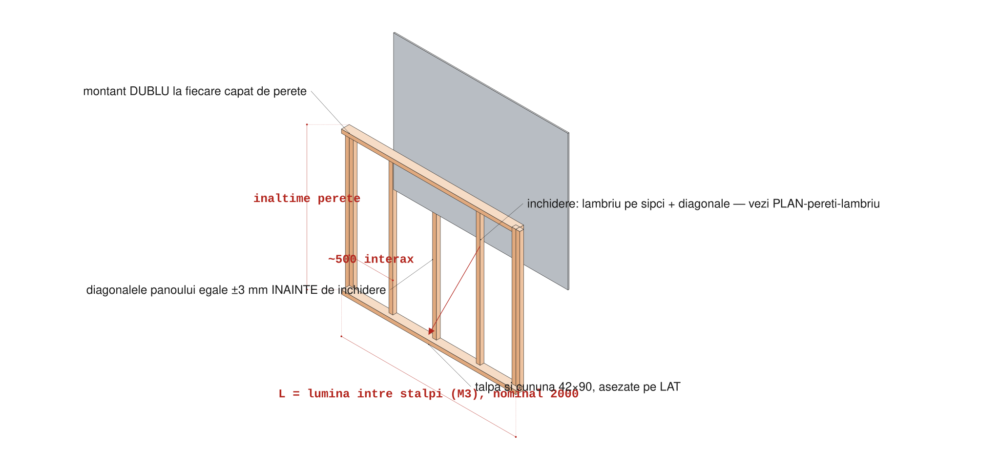
- Rama: talpa si cununa 42×90 pe LAT (90 = grosimea peretelui), montanti 45×45 la ~500 interax, aliniati la muchia EXTERIOARA (acolo vine lambriul, batut direct pe rama — GHID-SIMPLU-casa.html).
- Montant dublu la fiecare capat de perete si pe fiecare margine de gol.
- Fiecare montant: 2× surub 5×80 prin talpa + 2 prin cununa, pregaurite 3,5 mm.
- Masoara diagonalele panoului — egale la ±3 mm. Abia atunci montezi contrafisele de colt.
- Rigidizare cu contrafise, nu OSB: inchiderea peretelui (lambriu direct pe rama, contrafise in colturi, fara folie, geamuri laterale fixe) = GHID-SIMPLU-casa.html — el bate orice alta descriere a peretilor. OSB-ul structural a fost eliminat.
- Golul de usa nu are buiandrug — capul lui e chiar cununa peretelui din fata. La asamblare lasa talpa intreaga pe dreptul usii (tine panoul drept); se taie ultima, in Pasul 3.
- Restul golurilor (fereastra fata, geamuri laterale) le decupezi acum, urmarind rama pe dinauntru.
GATA CAND: ☐ 4 rame, diagonale egale ±3 mm · ☐ contrafise de colt pe toate · ☐ goluri decupate (talpa usii NU) · ☐ nimic proeminent.
PASUL 2 — Pregateste podeaua
- Trage cu creta liniile joistelor pe dusumea (0 · 280 · 720 · 1120 · 1550 · 2100). Sub talpi ai doar 28 mm de dusumea — prinderea reala se face doar acolo unde e joista dedesubt. Fara liniile astea prinzi in gol si nu vezi.
- Traseaza conturul casei: linia din spate lipita de stalpii de 4 m, linia din fata prin axele tijelor M12. Verifica diagonalele dreptunghiului.
- Stalpii din fata sunt deja montati: 90×90, prinsi cu coltare in L direct in grinda (nu in scandurile podelei) + suporti laterali, la 1600 peste dusumea. NU se taie, NU se cumpara. Verifica-i: vertical pe doua fete, fara joc — daca joaca, mai strange coltarele.
- Ancoraj anti-smulgere pe tijele M12 (nefolosite, ies ~100 la sub 100 mm de stalpi): pe fiecare stalp un coltar 100×100 cu gaura Ø13 in talpa, pus peste tija, saiba lata + piulita; bratul vertical prins in stalp cu 4× surub 6×60 pregaurit Ø5. Cate unul pe stalp, 2 in total. Coltarele in L din grinda tin la forfecare, astea tin la smulgere.
GATA CAND: ☐ linii joiste trasate · ☐ contur trasat, diagonale egale · ☐ stalpi fata verificati verticali, fara joc · ☐ 2 coltare Ø13 peste tijele M12.
PASUL 3 — Ridicarea si legarea cutiei
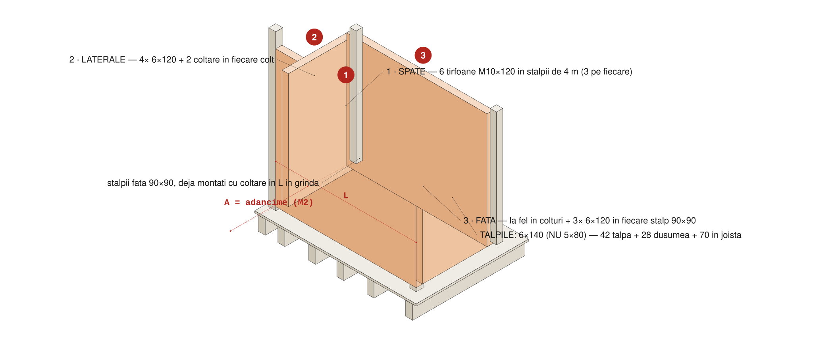
- SPATE. Ridici, aduci pe linie, proptesti, apoi prinzi de stalpii de 4 m: tirfoane M10×120 pe 3 inaltimi in fiecare capat (~200 jos, mijloc, ~200 sus), pregaurite Ø8 in perete si Ø6 in stalp. Nu suruburi de 5×80 aici — asta e nodul care tine si stalpii inalti.
- LATERALE. Fiecare perpendicular pe spate: 4× surub 6×120 prin montantul de capat + 2 coltare rigidizate 100×100 pe interior, sus si jos.
- FATA. Identic in colturi, plus 3× 6×120 in fiecare stalp 90×90.
- TALPILE IN PODEA, dupa ce cutia e in echer: surub 6×140 la fiecare 400 mm, pe liniile de joista + vinclu zincat 90×90 la ~400 pe interior.
- Verifici in ordinea: diagonalele cutiei (±5 mm) → verticalitatea celor 4 colturi → cununile la nivel.
- Ultima operatie pe fata: dupa ce cutia e in echer, dreapta si prinsa in colturi, taie talpa din dreptul usii la ras cu podeaua. Asta da inaltimea libera de 1600 la usa (cununa fata 1642 − 42 talpa). Nu mai devreme — talpa tine panoul drept pana atunci.
Lungimea surubului la talpi: talpa 42 + dusumea 28 = 70 mm pana sa ajunga in joista. Un 5×80 ar intra 10 mm in lemnul portant — practic nimic. Minimum 6×120, recomandat 6×140.
Abia dupa ce toate cele 4 laturi sunt prinse intre ele SI de podea se scot proptelele de pe stalpii de 4 m.
GATA CAND: ☐ 6 tirfoane M10 · ☐ 4 colturi × (4× 6×120 + 2 coltare) · ☐ talpi cu 6×140 la 400 pe liniile de joista + vincluri · ☐ diagonale ±5 mm · ☐ colturi verticale · ☐ proptele scoase · ☐ talpa usii taiata ultima (liber 1600).
PASUL 4 — Acoperisul
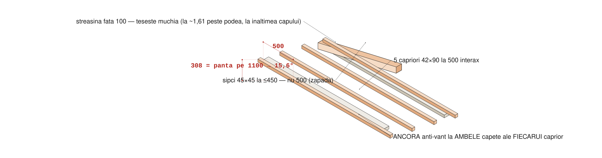
- Intai dulapul de reazem spate: 46×250 taiat la 2200, asezat pe muchie (250 in sus) peste capul stalpilor de 4 m SI peste cununa peretelui din spate — ambele la 1700, deci reazem continuu la 1950, nu doar in doua puncte. Fixare: vinclu 90×90 pe ambele fete la ~500 (in dulap si in cununa) + o placa metalica de imbinare pe fiecare fata, peste fiecare stalp de 4 m. Se monteaza dupa ce peretele spate e ridicat si in echer.
- 5 capriori 42×90 pe dulapul de reazem in spate si pe cununa in fata, la 500 interax, aliniati cu montantii. Crestatura de sprijin max 30 mm, sau taiati oblic la 15,6°.
- ANCORA anti-vant la AMBELE capete ale FIECARUI caprior — 10 bucati. Vinclul tine la forfecare, ancora tine la smulgere. Sunt lucruri diferite.
- Sipci 45×45 peste capriori, la ≤450 (nu 500 — asta e cerinta pentru zapada): 1× 6×100 la fiecare intersectie.
- Onduline: taiat la lungimea pantei + streasina, montat de jos in sus, suprapunere 1 onda lateral. Cuiele NUMAI in creasta ondulei (in vale curge apa). Pe randul de jos si pe marginile laterale: in fiecare creasta. In camp: din 2 in 2.
- FARA jgheab — apa pica pe terasa si se scurge printre scandurile de larice. Un jgheab ar atarna fix la nivelul capului (muchia e la ~1,61 m peste podea).
Pana nu are capriori pe el, propteste dulapul — 250 inaltime pe 46 grosime se rastoarna lateral.
Contra-intuitiv dar verificat: cel mai rau caz de smulgere e cu acoperisul fara zapada — vant pe o casa inalta, fara greutate care s-o tina. De aceea lantul de ancore nu e optional.
Streasina din fata ajunge la ~3,84 de la sol; peste podea muchia e la ~1,61 — exact la nivelul capului unui copil pe terasa. Teseste muchia.
GATA CAND: ☐ dulap reazem montat, proptit + placi metalice · ☐ 5 capriori la 500 · ☐ 10 ancore (2/caprior) · ☐ sipci la ≤450 · ☐ Onduline complet, cuie in creasta, indesite jos si pe margini · ☐ muchie tesita (FARA jgheab).
PASUL 5 — Inchideri si finisaj
- Fereastra PVC 56×56 in golul din fata (peste terasa). Bride sau suruburi prin toc, silicon de exterior pe contur. Verifica sa se deschida complet.
- Hublouri acrilice laterale, FIXE, prinse cu sipca pe AMBELE fete — sa nu le poata impinge afara un copil si sa deschida un gol de cadere. Gaurile in acrilic cu 1 mm joc: se dilata la caldura si crapa daca il strangi fix.
- Golul de usa: prag mic (sipca 18×45 pe talpa), muchii rotunjite.
- Fanta din spate (casa–gard, ~30 cm): inchide-o la ambele capete. Un copil care intra si se blocheaza acolo nu se scoate usor.
- Anti-catarare: verifica din exterior ca nu exista nicio treapta (streasina, sipca, hublou, colt de balustrada) de pe care se ajunge pe acoperis.
- Grund + lazura pe tot, cu atentie la capetele taiate si la ambele fete ale lambriului — lemnul nevopsit se umfla la prima ploaie serioasa.
- Sol moale ≥300 mm (scoarta/nisip), tasat, pe toata zona de cadere.
Podeaua casei = dusumeaua existenta, cu rosturi de 5 mm. Inauntru intra praf, ploaie in rafale, si cad jucarii mici printre scanduri. Daca deranjeaza, se pune mai tarziu o foaie de OSB peste dusumea, doar in interiorul casei — nu e structural, e confort.
GATA CAND: ☐ fereastra monta si functionala · ☐ hublouri dublu-sipcate cu joc · ☐ prag + muchii rotunjite · ☐ fanta inchisa · ☐ zero prize de catarare · ☐ lazura pe tot inclusiv capete si lambriu · ☐ sol moale asternut.
Feronerie casa
| Articol | Cant | Unde |
|---|
| Tirfon/bulon M10×120 | 6 | perete spate → stalpii de 4 m |
| Surub 6×120 (T30) | ~22 | colturi cutie + stalpi fata |
| Surub 6×140 (T30) | ~30 | talpi in joiste, la 400 |
| Surub 5×80 (T25) | ~100 | rame pereti (4/montant) |
| Surub 6×100 (T30) | ~25 | sipci acoperis |
| Surub 6×60 (T30) | 8 | coltarele Ø13 in stalpii fata (4/coltar) |
| Coltar rigidizat 100×100 · vinclu 90×90 | 8 · ~30 | colturi cutie · talpi + dulap reazem |
| Coltar 100×100 cu gaura Ø13 | 2 | peste tijele M12 — ancoraj stalpi fata |
| Placa metalica de imbinare | 4 | dulap → stalpii de 4 m (2/stalp) |
| Ancora anti-vant | 10 (+4 rezerva) | fiecare caprior, ambele capete |
| Cuie Onduline cu capac · piulita M12 + saiba | 1 set · 2 | acoperis · pe tijele existente |
| Perete: lambriu direct pe rama, contrafise, acrilic (fara folie, fara OSB) | — | vezi GHID-SIMPLU-casa.html §7 |
9 · Cumparaturi
Randurile LEROY = pret si stoc verificate live 06.08, magazinul Bucuresti Colosseum. Restul: estimari iulie 2026, se confirma la raft.
Onduline la Leroy Colosseum: doar 15 buc in stoc la verificare (necesar 3). Daca faci drumul, ia-le primul.
Drum 1 — acum
| Produs | Buc | Pret | Pentru |
|---|
| ☐ | LEROY Rigla rindeluita 60×60×3000 (stoc 504) | 4 | 46,00 | 8 stalpisori balustrada |
| ☐ | LEROY Sipca rindeluita 18×28×3000 (stoc 226) | 18 | 8,29 | ~42 lamele |
| ☐ | Rigla 45×70×3000 | 4 | ~35 | mana curenta + lisa balustrada + rama poarta |
| ☐ | Bulon M10×120 + saibe + piulite | +4 | ~3 | balustrada (ai 12; scara amanata) |
| ☐ | Inox 4×50 (T20) · balama cu arc ×2 · zavor · vinclu 40×40 ×4 | — | ~95 | lamele + poarta |
| ☐ | Lazura Sadolin + grund | — | ~120 | finisaj (acrilicul hublourilor e in randul de pereti, Drum 2) |
| ☐ | Consumabile F1: biti Torx T40/T30/T25 · prelungitor + PRCD · +1 pachet 6×80 · +2 larice rezerva · capace tije | — | ~200 | podea |
Drum 2 — DUPA masuratorile M1–M5
| Produs | Buc | Pret |
|---|
| ☐ | Rigla 45×45×3000 (montanti + sipci acoperis) — cu DEBITARE | ~16 | ~15 |
| ☐ | Grinda 42×90 (talpi, cununi, capriori) — cu DEBITARE | ~10 | ~28 |
| ☐ | Pereti: lambriu ~13 m² + inox 3,5×40 + 2× acrilic 500×500 + 5× rigla 45×45 — lista in GHID-SIMPLU-casa §7 | — | +680 |
| ☐ | LEROY Onduline Base 2000×860 (STOC 15) + cuie cu capac | 3 + 1 | 46,80 |
| ☐ | LEROY Fereastra PVC 56×56 (stoc 34) | 1 | 126,99 |
| ☐ | Suruburi 5×80 · 6×120 · 6×140 · 6×60 | 4 cutii | ~200 |
| ☐ | Coltare 100×100 ×8 · coltare 100×100 cu gaura Ø13 ×2 · vincluri 90×90 ×30 · placi metalice de imbinare ×4 · ancore anti-vant ×14 · tirfoane M10 ×8 | — | ~420 |
TOTAL FAZA 2 (scara amanata, nu inclusa): ~2.980 lei
NU se cumpara: usa (decis gol) · tije M12 (deja montate sub dusumea) · KVH/C2 pentru dublarea joistelor (decis skip) · materialele scarii (amanata 11.08: grinda 100×100, dulapi trepte, rigla tacheti, banda Tesa, pavaj, dibluri) · stalpii fata (deja montati, 90×90) · OSB de perete + folie + sipci de aerisire (eliminate — vezi GHID-SIMPLU-casa).
Lemnul Leroy e nerindeluit la grinzi, dulapi si rigle — pentru exterior e in regula, dar slefuieste nasul treptelor si mainile curente, si trateaza capetele taiate cu lazura.
10 · Siguranta copii — reguli permanente
- Copiii nu urca pe structura pana F2 (balustrada) nu e GATA. X-urile laterale se urca in 5 secunde — pana atunci, santier inchis.
- Toate capetele de surub la ras — nici iesite (agata), nici ingropate (pierzi reazemul capului). Zero varfuri iesite pe partea cealalta, oriunde.
- Piesa taiata = piesa prinsa in cleme. Gauri mari = ambele maini pe GSR (recul). Inox = GSR cu ambreiaj, niciodata impactul.
- Golul luminii sub 90 mm peste tot in balustrada si in poarta — verificat cu martorul, nu din ochi.
- Fara priza orizontala de catarare: nici in balustrada, nici de la balustrada spre acoperis.
- Geam care se deschide doar in fata, peste terasa. Lateral si spate: doar fix, dublu-sipcat.
- Scara: se coboara cu fata la ea. Spus si aratat copiilor din prima zi.
- Sol moale ≥300 mm sub toata zona de cadere, cel tarziu la darea in folosinta.
- Metoda de taiere KVH: trasat pe 4 fete → HS7611K pe fiecare fata → miezul cu fierastraul de impins.
11 · Deschise
| Item | Cine | Cand |
|---|
| Unde cade trunchiul fata de linia casei? Masoara de la spatele podelei pana la centrul trunchiului. Peste 1100 = casa e curata. Sub 1100 = trunchiul trece prin casa si peretele trebuie croit in jurul lui — opreste-te si spune-mi cifra. | Vlad | inainte de F4 |
| Cele 5 masuratori M1–M5 — M1 FACUT (1700, masurat 11.08); M2–M5 raman | Vlad | inainte de F4 |
| Scara — varianta simpla si usoara, decizie amanata de Vlad; pana exista acces sigur, copiii nu urca | Vlad | amanat |
| Nasul real al consolei (pozele sugereaza sub 700) → lungimile stalpisorilor de consola | Vlad | F1 |
| Numaratoarea receptiei: C2, inox 5×60, Heco 6×80 / 6×100, cheie 17/19 | Vlad | F1 |
| Poze cu starea reala — ultimele sunt din 03.08 si arata joistele goale | Vlad | prima iesire |
| Crestatura din stalpul spate (IMG_2285) si placa perforata de pe glulam (2A9524F8) — ce sunt? | Vlad | un reply |
| git push origin main — commit-urile asteapta, site-ul live e in urma | Vlad | azi |
| Review extern „om cu terase" — dupa decizia sisters ramane recomandare, nu conditie | optional | inainte de F4 |
12 · Istoricul corectiilor
Ce s-a schimbat fata de planurile initiale, si de ce. Toate sunt deja aplicate mai sus.
| Corectie | Motiv |
|---|
| Balustrada: 8 stalpisori, nu 7 → 16 M10, nu 14 | balustrada se face inaintea casei, deci ambele laturi au nevoie de stalpisor propriu la capatul dinspre casa — nu se pot sprijini de un perete care inca nu exista. |
| Stalpisorii cad pe axele joistelor, nu pe impartire egala | pe fata nu exista rigla de margine; un stalpisor „la mijloc, la 1050" ar avea bulonul in gol. Bonus: traveile ies 720 / 830 / 550, toate sub 900. |
| Lamele: 18 bare, nu 24 · adaugat inoxul 4×50 | ~42 lamele la pas de 106. Inoxul lipsea complet de pe lista. |
| Scara: coardele NU se cresteaza → trepte pe tacheti | crestatura de 202,5 × 190 mananca 138,5 mm perpendicular din coarda; dintr-una de 140 ar ramane 1,5 mm. |
| Tachet 80 mm (pe coarda de 100), nu 140 | tachetul e orizontal, coarda inclinata: pe 80 mm muchia coboara 85 mm — trebuie sa incapa in latimea coardei. |
| Scara: panta reala 46,8°, nu 49,5° | 49,5° = diagonala sol-punte (atan 2228/1900). Panta unei scari = urcare/calcatura = atan(202,5/190). Diferenta vine din 11 urcari dar numai 10 calcaturi. Nu schimba geometria decisa. |
| Scara: sectiuni Leroy — coarda 100×100, treapta 46×250 | disponibile in stoc si mai ieftine; treapta de 250 da talpii 250 mm de sprijin in loc de 190 → senzatie de ~39°. |
| Casa: inaltimea peretelui spate = M1, nu 1800 din plan | peretele se prinde de stalpii de 4 m, deci ei ii dicteaza inaltimea (~1772). Fata = M1 − 300. |
| Casa: tot cut list-ul in formule de M1/M2/M3 | casa se croieste pe structura reala, nu pe plan. |
| Casa: talpi cu 6×140, nu 5×80 | talpa 42 + dusumea 28 = 70 mm pana in joista; un 5×80 ar intra 10 mm in lemnul portant. |
| Casa: liniile joistelor trasate cu creta inainte de ridicare | sub talpi e doar dusumea de 28; prinderea reala se face doar pe cele 6 linii de joista. |
| Dublarea joistelor: skip definitiv | decizie informata pe cifre (§2). Poarta din 24.07 inchisa prin decizie, nu prin executie. |
| Casa: M1 = 1700 masurat, nu ~1772 estimat | masuratoare pe teren 10.08. |
| Casa: stalpii fata sunt 90×90 la 1600, deja montati cu coltare in L in grinda | montati de Vlad inainte ca planul sa fie finalizat; nu se taie si nu se cumpara. |
| Casa: reazem spate = dulap 46×250 pe muchie, nu grinda de 140 | 140 dadea panta de 10,2°, exact pe pragul Onduline; 250 duce spatele la 1950 si panta la 15,6°, iar dulapul era deja cumparat pentru scara. |
| Casa: usa fara buiandrug, talpa taiata din dreptul ei | cerinta Vlad: un copil de 1,60 sa intre fara sa se aplece. Cu buiandrug, golul ar fi iesit 1516. |
| Casa: streasina 100 fata (nu 200), caprior 1342 (mai scurt cu 100) | cu streasina de 200 muchia acoperisului cobora la ~1586 peste podea, sub inaltimea de intrare 1600 — copiii s-ar lovi cu capul. Cu 100 muchia urca la ~1614. Caprior = √(1100²+308²) + 100 fata + 100 spate = 1342. |
| Casa: FARA jgheab si burlan | ar atarna sub muchie, fix la nivelul capului (~1,61 m peste podea). Apa pica pe terasa si se scurge printre scandurile de larice. |
| Casa: pereti = contrafise, fara folie, lambriu direct pe rama (GHID canonic) | varianta cu OSB / folie / sipci de ventilare (v1, PLAN-pereti-lambriu) e depasita. Rigidizare cu 16 contrafise 45×45 in colturi; interior liber. Canonic pe pereti = GHID-SIMPLU-casa.html. |
| Casa: geamuri laterale acrilic 500×500, nu 500×250 | o placa 500×250 nu poate da un geam de 440×440. Din fiecare placa 500×500 iese un geam fix centrat. |
| Casa: delta pereti lambriu = +680 vs OSB (nu +510/+883) | lambriul suprapus 2 cm consuma factorul 96/76 → ~13 m², nu 11. Costul cade la ~850 lei lambriu, delta reala +680. |
| Scara: AMANATA (11.08) | decizie Vlad: varianta simpla si usoara, later. Materialele scarii nu se mai cumpara acum; geometria din §7 ramane referinta. |
Documentul asta inlocuieste, pentru Faza 2: PLAN-FAZA-2 · FISA-FAZA-2-casa-gard-scara · FISA-MONTAJ-balustrada · FISA-MONTAJ-scara · SCHEMA-scara · FISA-MONTAJ-casa · FISA-ACHIZITIE-faza-2 · FISA-CONTINUARE-podea · CASA-plan-constructie. Toate mutate in _archive/.
Raman valabile, in afara scopului: manualul si fisele Fazei 1 (structura as-built) · Fisa-santier-casuta.pdf (reviewul structural 10.07) · AUDIT-2026-08-06.md (auditul) · STATUS.md · Tracker_materiale.
Desenele izometrice sunt generate din cotele reale cu tools-fise/iso2.py + gen_balustrada.py / gen_scara.py / gen_casa.py — se regenereaza daca se schimba o cota.